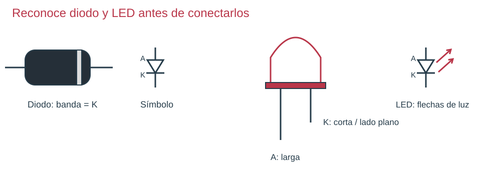
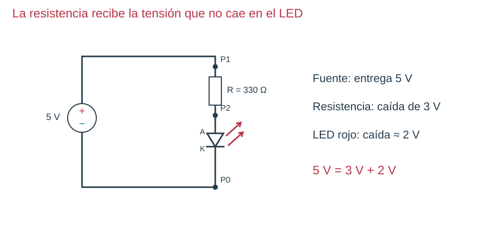
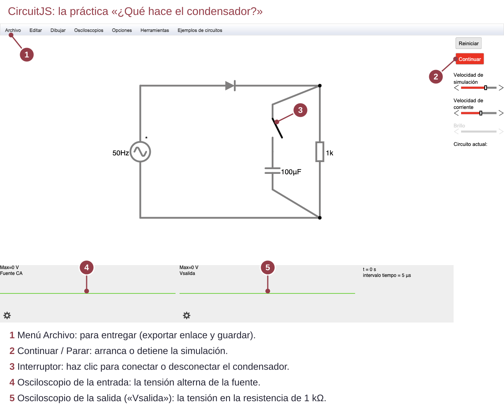
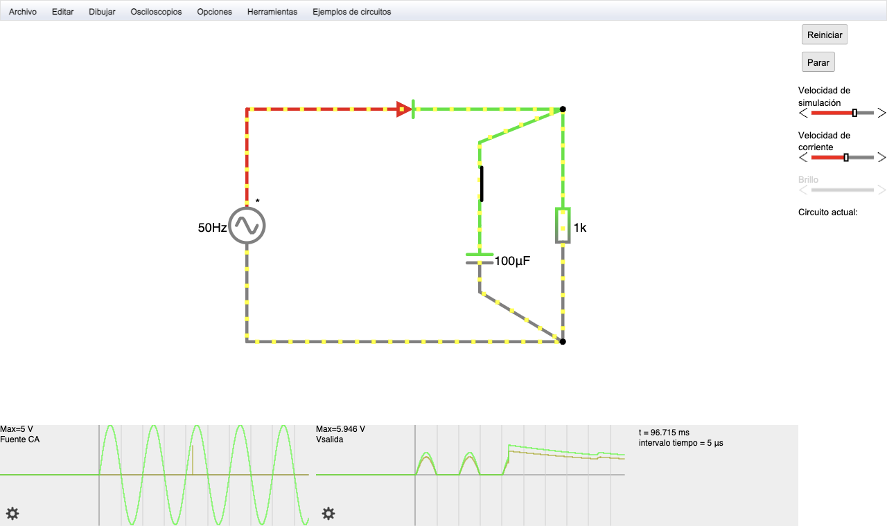

Contenido
Una puerta de un solo sentido
Un diodo deja pasar la corriente en un sentido y la bloquea en el otro, como una puerta que solo se abre hacia un lado. Tiene dos terminales: ánodo (A) y cátodo (K). La corriente entra por A y sale por K. Un LED es un diodo que además da luz.

El LED necesita una resistencia
Un LED rojo se queda con unos 2 V. Si lo conectas solo a 5 V pasaría tanta corriente que se quemaría. Por eso siempre va en serie con una resistencia, que se queda con el resto de la tensión y limita la corriente.

R = (Vfuente − VLED) / I
Ejemplo: con 5 V y un LED rojo que queremos que lleve 10 mA (0,010 A): R = (5 − 2) / 0,010 = 300 Ω. Usamos la siguiente que se vende, 330 Ω: pasarán unos 3 / 330 = 9,1 mA.
Ahora tú. Monta en Tinkercad (diseño S8 LED) una fuente de 5 V, una resistencia de 330 Ω y un LED. Mide la tensión del LED y la de la resistencia. ¿Suman 5 V? Después detén, gira el LED y vuelve a probar.
Ver solución
Sí: las dos tensiones suman 5 V. Con el LED al revés no pasa corriente y no se enciende: el diodo bloquea.
Alterna y continua
Una pila da corriente continua: su + y su − no cambian. Los enchufes dan corriente alterna: la tensión cambia de signo una y otra vez, 50 veces por segundo. Si pones un diodo, solo deja pasar la mitad positiva: a la salida salen pulsos de un solo signo.
Conoce CircuitJS
Para ver tensiones que cambian tan deprisa usaremos otro simulador, CircuitJS. Funciona en el navegador, sin cuenta. Su herramienta estrella es el osciloscopio: una gráfica, abajo, que dibuja cómo cambia una tensión con el tiempo.

Práctica · ¿Qué hace el condensador?
Es el circuito del diodo con un condensador que puedes conectar o desconectar con un interruptor. Llega parado. Ten a mano la ficha «CircuitJS en 3 gestos».
- Predice. En el apartado 3 del informe dibuja cómo crees que será la salida con el interruptor abierto y con él cerrado.
- Compruébalo. Pulsa Continuar y mira el osciloscopio de la salida («Vsalida»). Después haz clic en el interruptor para cerrarlo. (En el móvil, el botón Continuar está en un panel oculto: toca la pestaña ‖ del borde derecho).
- Cambia un valor. Haz doble clic en el condensador, escribe 50u (50 µF) y pulsa OK. Después prueba 200u. La u significa «micro».
- Explica en dos frases qué hace el condensador y qué cambia al aumentar su capacidad.
- Entrega en la tarea «Informe de prácticas»: Archivo → Exportar como enlace… → Copiar al portapapeles, y pega el enlace en el texto de la tarea. Después Archivo → Guardar como…, deja el nombre que propone y sube ese archivo. Si no terminas en clase, termínala en casa con el mismo enlace.

Abrir la práctica en una pestaña nueva (trabaja y entrega desde esa pestaña).
Comprueba tu explicación
Sin condensador salen pulsos que bajan hasta 0 V. Con el condensador, este se carga en cada pico y da energía mientras el diodo no deja pasar: la salida casi no baja. Con más capacidad baja todavía menos y se parece más a una tensión continua.
Compruébalo
Decide si cada frase es verdadera o falsa.
00:00: